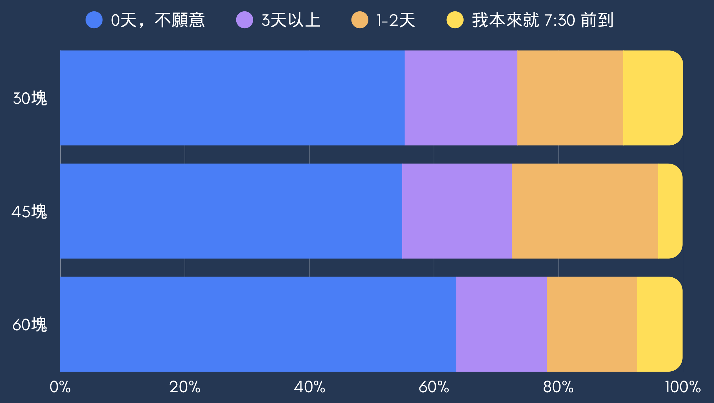
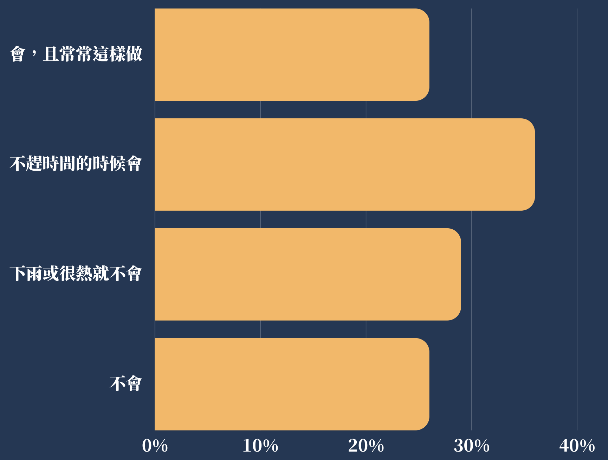
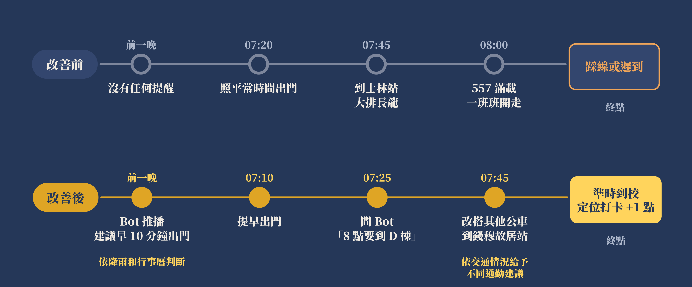
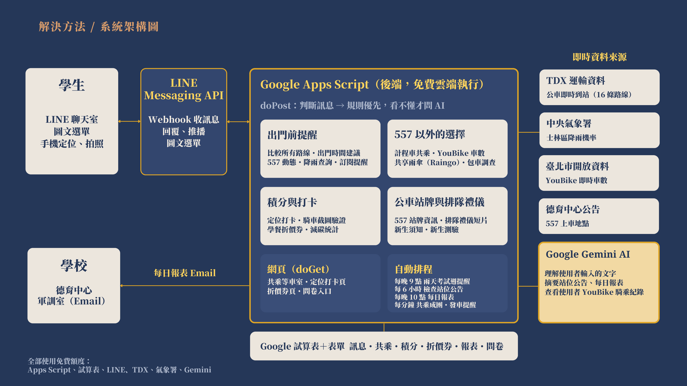
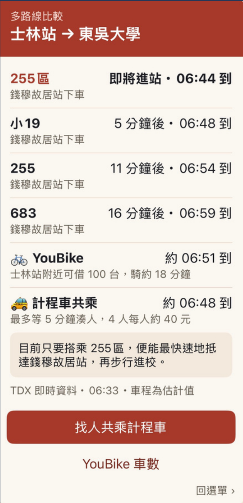
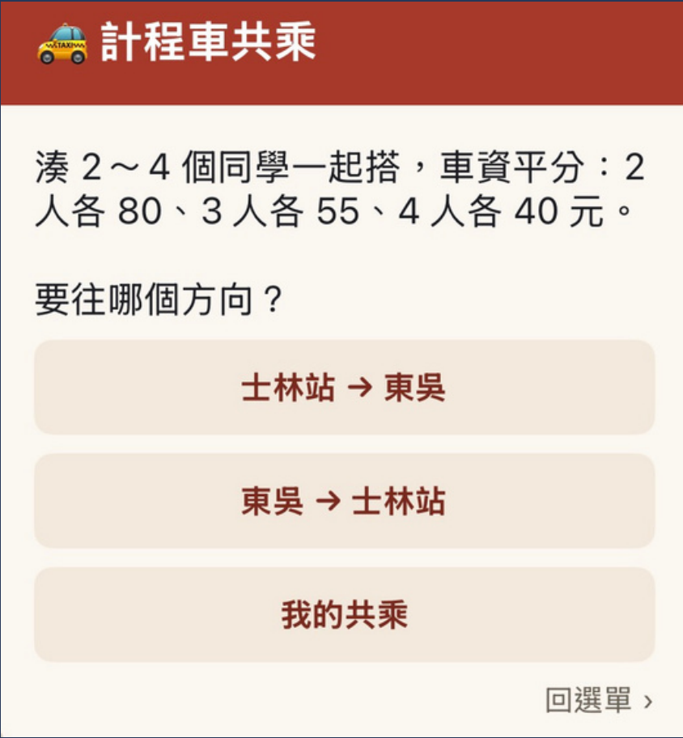
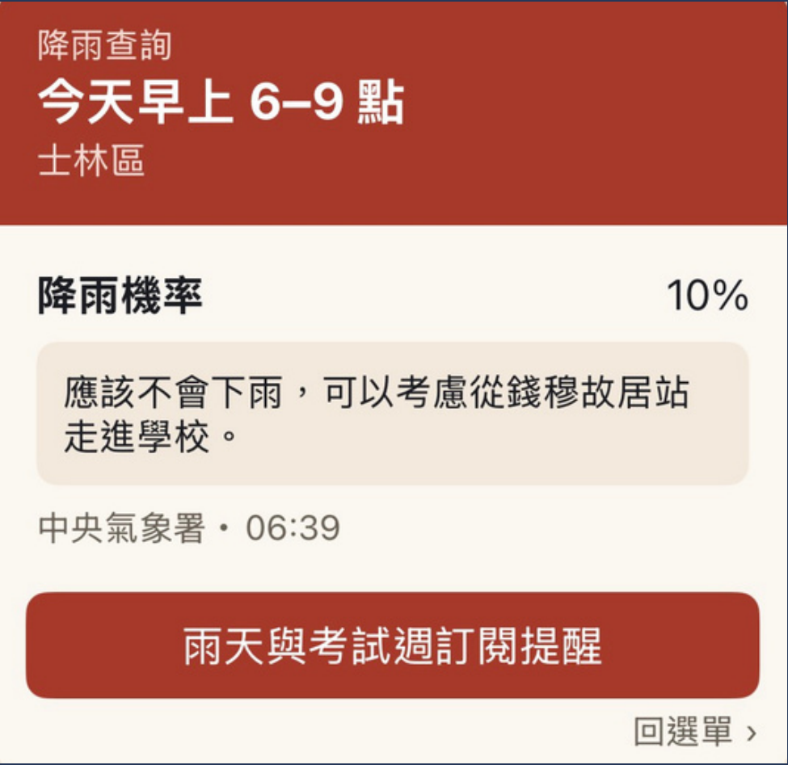
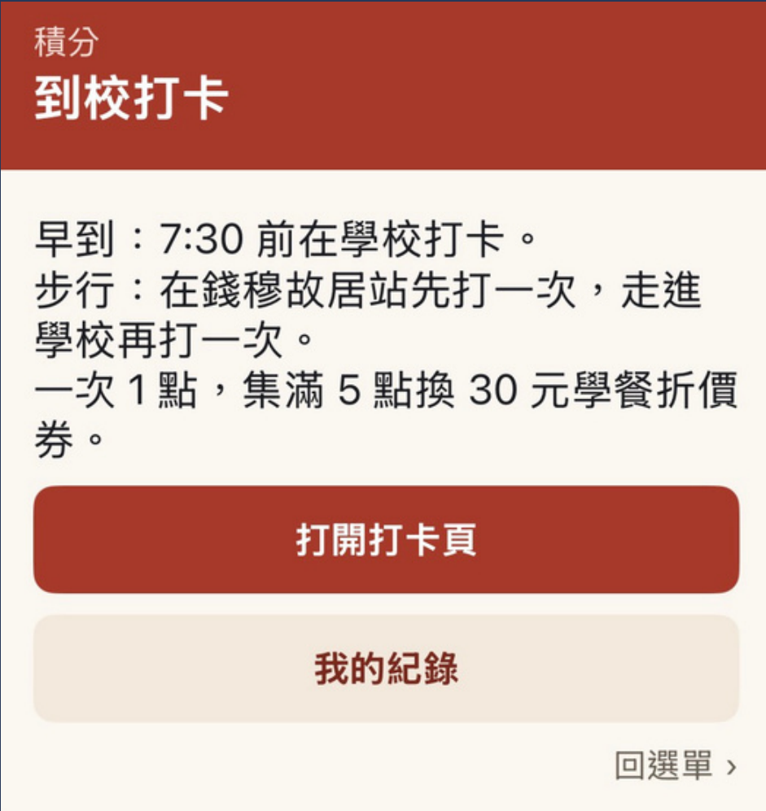
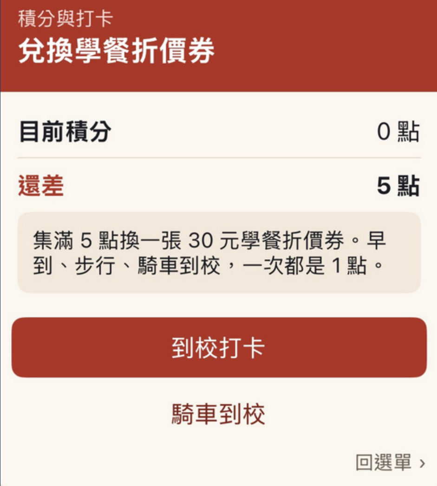
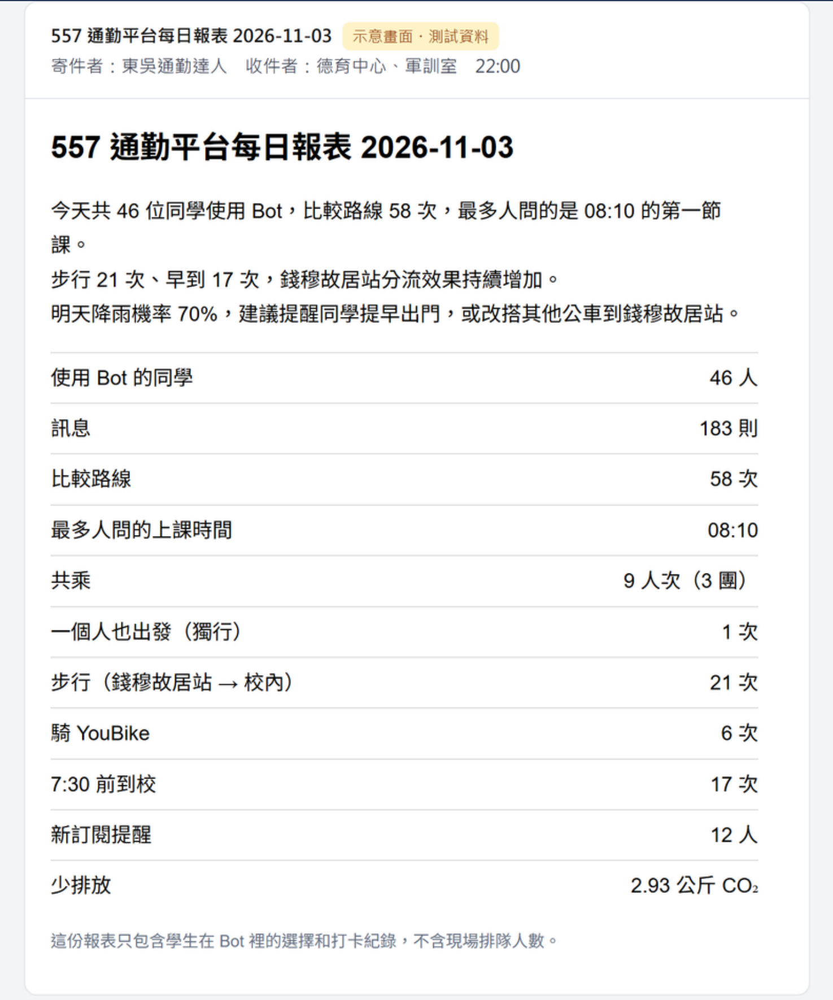

| 資料科學系二年級 B 班 | 14173236 | 龔俞心 |
| 資料科學系二年級 B 班 | 14173237 | 簡晨芸 |
| 資料科學系三年級 B 班 | 13173201 | 林紹軒 |
東吳大學外雙溪校區位於山邊，校區外沒有捷運直達，多數同學必須在捷運士林站轉乘 557 公車上學。557 是往返士林站與外雙溪校區最主要、也最擁擠的路線。每逢上課尖峰，士林站候車隊伍經常排成長龍，同學只能看著滿載的公車一班班開走。在 Dcard 東吳大學板上，關於「557 太擠」、「排隊被插隊」、「站牌一直換」的抱怨也從未間斷（Dcard，n.d.）。
此外，因捷運環狀線北環段施工，557 在士林站的上車處自民國 115 年 1 月 12 日起遷至中正路 205 號前，士林國中站亦於 2 月 7 日起遷移（東吳大學德育中心，2026）。北環段預計民國 120 年才完工（理財周刊，n.d.），代表站位變動造成的不便還會持續數年。
學校並非沒有作為：德育中心已於上下學尖峰加開 557、300、通勤 30 等路線及劍南路站師生專車，並建議同學尖峰時段改至士林國中站排隊（東吳大學德育中心，2026）。然而多數同學仍從士林站轉乘 557，專車班次有限，能分走的人不多；改至士林國中站排隊也只是改變排隊地點，搭乘 557 的總人數並未減少。
綜合上述背景，本專案將核心問題定義為：
外雙溪校區學生的通勤需求集中在少數尖峰時段與單一路線（557），而學生缺乏「何時會擠、還有哪些替代方式、改走其他方式有什麼好處」的資訊與誘因，導致尖峰人潮無法被分散；學校方面也缺乏每日的通勤需求數據，難以據以調整交通安排。
加開班次需要公車處的資源與預算，並非學生能直接推動的事。因此本專案不以「增加班次」為目標，而是聚焦在學生端可以改變的行為：引導分流、提供替代交通方案，並把需求數據整理給學校參考。研究範圍限定為「捷運士林站往返外雙溪校區」的通勤旅次，以平日上課時段為主。
本專案以 LINE Bot「東吳通勤達人」為單一入口，設定三項目標：
| 目標 | 說明 | 對應的分流方式 |
|---|---|---|
| 分散尖峰人潮 | 透過獎勵機制鼓勵提早到校、改搭其他公車步行進校，讓同學在時間與路線上的選擇更有彈性。 | 時間分流、空間分流 |
| 多元通勤選擇 | 即時比較不同公車路線、YouBike 與計程車共乘的到校時間，讓同學知道改走其他方式會不會比較快。 | 空間分流、車資分流 |
| 資訊整合 | 將天氣提醒、公車動態、站牌資訊、打卡集點整合於 LINE Bot；並每日彙整報表提供學校。 | 資訊整合、需求回饋 |
為避免只憑自身經驗判斷問題，本專案以三種方式蒐集實際資料，如表 1 所示。
| 方法 | 對象與期間 | 內容 |
|---|---|---|
| 線上問卷 | 東吳外雙溪校區學生，2026 年 10 月發放，有效樣本 n＝200（匿名） | 通勤方式、候車時間、擠不上車頻率、站位遷移經驗、替代方案與獎勵意願；獎勵與包車金額題採 A/B/C 三版本（30／45／60 元），依年級群組發放，各版本填答人數為 94、51、55 人。 |
| 公車實測 | 2026/10/12–10/16（週一至週五），07:00–19:00 | 團隊撰寫程式，透過交通部 TDX 公車即時動態 API 每 15 秒記錄 557 各車進出站，每日平均 82 班，計算相鄰兩班抵達士林站的間隔。 |
| 次級資料 | 德育中心公告、Dcard 東吳板、問卷開放題 | 學校現有措施、站位異動資訊、學生自發抱怨與建議。 |
問卷結果顯示，557 擁擠並非少數人的感受，而是多數學生每週都會遇到的日常（表 2）。其中「上車處搬遷後第一次去搭沒有找到」的比例高達 57%，說明站位資訊的傳達也是一大痛點。
| 指標 | 比例 |
|---|---|
| 每週至少經歷一次因 557 太擠而上不了車 | 58% |
| 平均要等 10 分鐘以上才搭得上 557 | 68% |
| 有早八（8:10 第一節）的日子通常踩線或遲到 | 28% |
| 557 上車處搬遷後，第一次去搭沒有找到 | 57% |
| 通勤時已會搭其他公車至錢穆故居站再步行進校 | 17% |
註：百分比以全部填答者為分母。資料來源：本團隊東吳外雙溪通勤問卷。
若尖峰人多、班次也相對增加，擁擠程度應可被吸收。但實測結果顯示（圖 1），團隊依上下課人潮訂出的五個尖峰時段，557 平均 7.9 分鐘來一班（最長間隔 16.5 分鐘，每小時平均 7.8 班）；離峰平均 10.2 分鐘一班（最長間隔 29.8 分鐘，每小時 5.9 班）。除 09:30–10:10 時段班距較密外，早八前、午間與 15:00 時段的班距都接近 10 分鐘，與離峰相差無幾。換言之，尖峰時段人流最多，557 的班次卻沒有明顯增加，供需落差是擁擠的直接原因。
問卷開放題「對 557 的想法與建議」中，同學的回覆高度集中在「班次太少」、「排隊太久」與「尖峰太擠」，也有同學反映班距不固定、難以掌握出門時間。以下節錄部分原文：
「拜託多來一點557五點放學都要等很久才能回家」、「557讓我每天都很焦慮 到底要提早幾點出門」、「公車數量和班次明顯不夠應付需要搭公車的學生」、「人好多，557地獄」、「班次希望能多開一點真的每天都很難擠上去」、「能不能班次多一點==每次都等很久也很不固定 有時候一次來超多台有時候都沒車」
綜合問卷、實測與開放題，本專案將學生與學校兩類使用者的需求歸納如表 3，作為功能設計的依據。
| 對象 | 痛點（資料佐證） | 需求 |
|---|---|---|
| 學生 | 不知道哪天會特別擠，也不確定其他公車哪台會比較快（68% 需等 10 分鐘以上） | 出門前就能知道各種方式的預估到校時間 |
| 一個人搭計程車太貴（約 160 元），天氣不好又不想走路 | 有人分攤車資的共乘、雨天提醒與替代方案 | |
| 提早到或改走路沒有任何好處（有獎勵時願意分流的比例明顯提高，見參、一） | 讓分流行為「被看見、有回饋」 | |
| 上車處搬遷，很多人第一次找不到（57%） | 站位變更時主動通知、新生入門說明 | |
| 學校 | 只能依往年經驗安排班次，沒有每天的人潮數據 | 定期、自動化的學生通勤選擇紀錄 |
在設計功能之前，團隊先以問卷檢驗「學生在什麼條件下願意改變通勤行為」，分為時間分流、空間分流與車資分流三個方向。
問卷以 A/B/C 三版本詢問「若早上 7:30 前到校可獲得 30／45／60 元獎勵，每週願意提早到校幾天」。結果顯示（圖 2），給予 30 元獎勵後約有 35% 的學生願意提早到校；然而將獎勵提高至 45、60 元，願意的比例並沒有明顯提高（三組差異未達統計顯著，卡方檢定 p＝0.48）。這表示學生卡的是「要早起」本身，而非獎勵不夠，因此本專案採用最低的 30 元作為獎勵基準。
以課表資料估算，每天早八約有 2,384 人到校。若每位提早到校的學生每天發放 30 元：2,384 人 × 35% × 30 元 × 20 個上課日 ≈ 每月 50 萬元，學校難以長期負擔。因此團隊在不降低單次獎勵金額的前提下，比較三種發放方式（表 4），最後選擇「集點制」：成本最低，又能照顧到所有願意分流的學生。
| 每天發放 | 每日限量 300 份 | 集點制（5 點換 1 份） | |
|---|---|---|---|
| 每月成本 | 約 50 萬元 | 約 18 萬元 | 約 10 萬元 |
| 受益學生 | 約 835 人／天 | 300 人／天 | 約 835 人／天 |
| 評估 | 吸引力最強，但成本太高 | 成本好控制，但晚到的學生沒有誘因 | 成本最低，吸引力可能降低，需試辦驗證 |
士林站有 255、小 19、683 等其他公車可到錢穆故居站，再步行約 10 分鐘進校。問卷顯示已有 17% 的學生這樣通勤；而若步行可累積點數兌換學餐折價券，約 75% 的學生在無特殊情況（如下雨、很熱）下願意改搭其他公車步行入校（圖 3）。因此，本專案將「時間分流」與「空間分流」結合，從兩個方向降低 557 尖峰壓力。


針對「從士林站直達校園、與其他學生分攤車資」的學生包車，三版本問卷顯示每人單趟 45 元以下時，皆有七成以上學生願意搭乘；即使提高到 60 元，仍有超過一半的學生願意。以士林站到外雙溪校區計程車約 160 元估算，3 人共乘每人約 55 元、4 人每人約 40 元，正好落在學生可接受的範圍內，成為計程車共乘與學期包車兩項功能的設計依據。
依據上述需求與問卷結果，團隊將 LINE Bot 功能分為四個選單與一個學校端功能（表 5）。學生只需加入一個 LINE 官方帳號，不必另外下載 App。
| 選單 | 提供的功能 | 對應痛點 |
|---|---|---|
| 出門前提醒 | 比較所有路線（公車＋YouBike＋計程車共乘）、出門時間建議、557 發車前提醒、557 雙向即時動態、降雨查詢、雨天與考試週訂閱提醒 | 不知道哪天擠、哪條路線快 |
| 557 以外的選擇 | 計程車共乘（現在走／7 天內預約、信用分制度）、YouBike 即時車數、共享雨傘、學期包車調查 | 計程車太貴、天氣不好 |
| 積分與打卡 | 定位打卡（7:30 前早到、錢穆故居站步行）、騎 YouBike 到校（截圖由 AI 審核）、集滿 5 點換 30 元學餐折價券、我的紀錄與成就、全校減碳看板 | 分流沒有回饋 |
| 公車站牌與排隊禮儀 | 新生須知與三題測驗、557 最新上車地點（每 6 小時檢查德育中心公告，變更即推播）、排隊禮儀短片 | 站位搬遷找不到 |
| 每日報表（學校端） | 每晚 10 點彙整當日紀錄，由 AI 寫成三行摘要，以 Email 寄給德育中心與軍訓室 | 學校缺乏每日數據 |
以「有早八的一天」為例（圖 4），改善前學生前一晚沒有任何提醒，照平常時間出門，到士林站才發現大排長龍，最後踩線或遲到；改善後，Bot 在前一晚依降雨機率與學校行事曆推播「建議早 10 分鐘出門」，學生到士林站時可詢問 Bot，依即時交通狀況改搭其他公車到錢穆故居站，準時到校並打卡累積點數。

同樣地，557 擠不上時，學生可透過 Bot 即時比較其他交通方式或發起計程車共乘（4 人各付 40 元）；到校後的打卡與通勤選擇也會每天彙整成報表寄給德育中心，讓過去「看不見」的需求被學校看見。
相較於一般公車動態 App 只提供「下一班何時到」，本方案的差異在於：（1）以分流為目標，將 557 以外的公車、YouBike、共乘放在同一張卡片比較並直接給出建議；（2）以 A/B 測試問卷的實證數據決定獎勵金額與發放方式；（3）學生的每一次選擇都成為學校調整交通安排的數據，形成學生與學校之間的回饋迴路；（4）以學生原本就在使用的 LINE 為入口，免安裝、後端全採免費額度。
系統架構如圖 5 所示。學生在 LINE 聊天室透過圖文選單、文字、手機定位或拍照與 Bot 互動；LINE Messaging API 以 Webhook 將訊息送至 Google Apps Script 後端。後端判斷訊息時採「規則優先，看不懂才問 AI」的設計，以節省 AI 用量並確保回覆穩定。即時資料來自 TDX 公車動態、中央氣象署降雨機率、臺北市 YouBike 開放資料與德育中心公告；所有紀錄存放於 Google 試算表，並由排程每日產出報表寄送學校。

| 技術／資料 | 用途 | 選用理由 |
|---|---|---|
| LINE Messaging API | 收發訊息、推播提醒、圖文選單、Flex 卡片 | 學生普及率高，免安裝 |
| Google Apps Script | 後端邏輯（doPost／doGet）、自動排程（每晚 9 點提醒、每 6 小時檢查站位、每晚 10 點報表、每分鐘共乘成團） | 免費雲端執行，不需架設伺服器 |
| Google 試算表＋表單 | 儲存訊息、共乘、積分、折價券、報表與問卷資料 | 學校行政人員也能直接檢視 |
| 交通部 TDX API | 16 條公車路線即時到站 | 官方開放資料，學研單位可免費申請 |
| 中央氣象署開放資料 | 士林區降雨機率（雨天提醒） | 官方開放資料 |
| 臺北市 YouBike 即時資料 | 士林站周邊與校內站點可借可還數 | 每分鐘更新 |
| Google Gemini | 理解使用者自由輸入、摘要站位公告與每日報表、判讀 YouBike 騎乘截圖 | 免費額度、支援圖片 |
系統的核心功能已實作並上線運作（詳見伍、二），所使用的 API 皆為公開資料，並已撰寫自動化測試驗證卡片格式與主要流程。需要注意的是 TDX API 有每秒呼叫次數限制，團隊曾因大量下載歷史資料被暫停使用，目前已改為依需求即時查詢。
系統本身全部使用免費額度（Apps Script、試算表、LINE、TDX、氣象署、Gemini），開發與維運的金錢成本接近零。唯一的限制是 LINE 免費方案每月僅 200 則主動推播，若好友數增加，站位變更等全體推播將快速消耗額度，屆時需評估升級方案或改以被動查詢為主。
真正的困難在於獎勵經費。表 4 的集點制雖然已是三種方式中最省的，每月仍約需 10 萬元，一學期（約 4 個月）約 40 萬元，對學校或任何單一單位都是不小的負擔，也不是本團隊能自行籌措的金額。而且這個數字是假設 35% 有意願的學生全部參與所做的估算，實際參與率與兌換率仍未知，可能高估也可能低估。因此本專案不預設「全校全面發放」，而採分階段、成本可控的做法：
換言之，獎勵經費是本專案目前最大的不確定因素，需待合作洽談與試辦數據出爐後才能確認可行的規模。
計程車共乘由團主叫車付款、其他人轉帳分攤，Bot 只負責媒合；學期包車則須洽詢合法遊覽車或交通業者，並確認保險與收費方式的合法性。隱私方面，問卷全程匿名；Bot 只記錄必要的打卡與通勤選擇，每日報表只呈現統計數字，不含個人身分。
| 限制／風險 | 因應方式 |
|---|---|
| 車程、步行時間與碳排係數目前為估計值 | 試辦期間實測步行時間，同時出發驗證路線建議 |
| 問卷為「填答意願」，實際行為可能較少 | 題目已將代價寫入（如「要比平常早出門」），並以試辦打卡人數驗證 |
| 定位打卡可能被假定位 App 規避 | 搭配每日次數上限、異常紀錄檢查 |
| AI 判讀騎乘截圖的準確度未經大量驗證 | 同一筆紀錄不得重複使用；試辦期間人工抽查 |
| 每日報表不含現場實際排隊人數 | 申請悠遊卡刷卡數據校正人潮推算 |
表 8 列出本專案自 2026 年 10 月起的執行時程，並明確區分已完成與預計執行的項目。
| 時間 | 工作項目 | 狀態 |
|---|---|---|
| 10/08 | 問題探索：蒐集德育中心公告、Dcard 抱怨與 TDX 資源，完成專案整理與模組規劃 | ● 已完成 |
| 10/10–10/13 | LINE Bot 第一版（557 動態、多路線比較器）；問卷題目設計與表單程式化 | ● 已完成 |
| 10/12–10/16 | 以 TDX 實測 557 一週班距 | ● 已完成 |
| 10 月中下旬 | 通勤問卷發放與回收（n＝200），A/B/C 三版本分析 | ● 已完成 |
| 10/26 | Bot 改版：積分 1 點制與學餐折價券、557 雙向即時動態、全校減碳卡片 | ● 已完成 |
| 10/30 | 東吳黑客松（流程改善組）初審書面簡報繳交 | ● 已完成 |
| 11 月下旬 | 招募試用者：於班級群組與社群發布 Bot 加好友連結，邀請同學試用 | ○ 預計 |
| 11 月下旬–12 月 | 洽談合作：向德育中心說明專案、請教每日報表需求與試辦經費；與校內學餐廳洽談折價券合作；與 Raingo 洽詢共享雨傘設點 | ○ 預計 |
| 12 月 | 小規模試辦：試辦集點換折價券（視合作結果）、每日報表試寄德育中心、實測步行時間 | ○ 預計 |
| 12 月 | 試用一至兩週後發放「使用後回饋問卷」，蒐集使用過的功能、路線建議準確度與滿意度 | ○ 預計 |
| 116 年 1 月 | 彙整試辦數據，比較試辦前後指標，完成期末報告 | ○ 預計 |
LINE Bot「東吳通勤達人」已建置完成並可實際加入使用，各功能完成狀態如表 9。圖 6 為實機畫面。






| 功能 | 狀態 | 說明 |
|---|---|---|
| 出門前提醒（全部） | 已上線 | 路線比較、出門時間建議、發車提醒、557 動態、降雨查詢、訂閱提醒 |
| 計程車共乘、YouBike 車數 | 已上線 | 含現在走／預約、我到了、信用分扣分 |
| 積分與打卡、折價券 | 已上線 | 定位打卡、騎車截圖審核、我的紀錄、全校減碳 |
| 新生須知、站位變更推播 | 已上線 | 加好友自動推送；每 6 小時檢查公告 |
| 每日報表 | 程式完成 | 目前以測試資料產出，尚未正式寄送學校 |
| 共享雨傘 | 規劃中 | 規劃與 Raingo 合作設置租借站 |
| 學期包車 | 規劃中 | 選課後以表單統計時段，再洽詢業者 |
完成通勤問卷 200 份回收與三版本 A/B 分析、557 一週實測與班距分析，並據此得出三項關鍵發現：（1）尖峰班距與離峰相近，供需落差明確；（2）獎勵金額由 30 元加倍至 60 元，提早到校意願沒有明顯提高，故採最低成本方案；（3）每人 45 元以下的共乘價格可吸引七成學生。這些發現已直接反映在獎勵制度與共乘定價的設計中。
程式碼以 GitHub 進行版本控管，至今共 71 次提交；並以 Node.js 撰寫 14 個測試檔、共 107 項單元與功能測試，涵蓋卡片格式、選單、共乘、積分、問卷題目一致性等。撰寫本報告時 106 項通過，1 項與日期相關的測試待修正。每日報表已可依當日紀錄自動產生（圖 6(d)），但目前內容為測試資料，尚未有真實使用數據。
為清楚區分成果與規劃，以下項目尚未執行或尚無實際數據：Bot 尚未進行正式的使用者試辦，因此目前沒有真實的使用人數、分流成效與滿意度數據；集點換折價券尚未與學餐廳達成合作；共享雨傘與學期包車仍在規劃階段；排隊禮儀短片與新生測驗的實際學習成效尚未驗證。這些將是期末前的主要工作。
後續依「先在校內小規模試辦、再與學校合作推動、最後擴展到更多校園」三階段進行（表 10）。
| 階段 | 工作內容 |
|---|---|
| 短期｜本學期 小規模試辦 | 邀請同學試用 LINE Bot 並發放使用回饋問卷；試辦集點換學餐折價券，比較試辦前後 7:30 前到校人數；實測步行時間，同時出發驗證路線建議的準確度；修正已知問題（關鍵字互相搶答、回程路線比較）。 |
| 中期｜下學期 與學校合作推動 | 每日報表試寄德育中心，確認最需要的資料欄位；與校內學餐廳合作提供折價券；申請悠遊卡刷卡數據，校正人潮推算；依選課結果開放包車登記並洽詢合法業者。 |
| 長期｜一年以上 擴展到更多校園 | 累積通勤數據，作為學校改善交通安排的依據；推廣到其他需要「捷運轉公車」的學校；建立長期的通勤趨勢與減碳紀錄。 |
試辦一學期後，將以 Bot 使用紀錄與回饋問卷比對問卷基準值，預期目標如表 11。表中「目標值」為團隊設定的期望，並非已達成的成果。
| 指標 | 現況（問卷） | 試辦目標 | 驗證方式 |
|---|---|---|---|
| 有早八的日子踩線或遲到 | 28% | 20% | 回饋問卷 |
| 每週至少一次擠不上 557 | 58% | 45% | 回饋問卷 |
| 會搭其他公車到錢穆故居站步行進校 | 17% | 30% | 回饋問卷、步行打卡數 |
| 7:30 前到校人數 | 試辦前基準 | 較基準增加 | 早到打卡數 |
本組三位成員的分工如表 12。
| 工作項目 | 內容 | 負責成員 |
|---|---|---|
| 專案管理、問題探索 | 時程控管、背景資料蒐集、簡報與報告統整 | 簡晨芸 |
| 問卷設計與分析 | 題目設計、A/B 版本發放、統計分析與圖表 | 龔俞心 |
| 557 實測與資料分析 | TDX 資料收集程式、班距分析 | 龔俞心 |
| LINE Bot 開發與測試 | Apps Script 後端、卡片設計、自動化測試 | 林紹軒 |
| 視覺設計 | 圖文選單、卡片美編、簡報設計 | 林紹軒 |
| 試辦推廣與對外聯繫 | 招募試用者、德育中心與學餐廳洽談 | 簡晨芸 |
557 擁擠是外雙溪學生的日常：58% 的學生每週至少擠不上一次，而尖峰班距幾乎與離峰相同。加開班次非學生所能決定，但本專案透過問卷找到學生可以改變的地方——集點鼓勵早到與步行進校、以每人 40 至 55 元的共乘分流，並以 LINE Bot 整合這些選擇、把需求整理給學校。目前原型與分析已完成，實際成效與獎勵經費仍待合作洽談與試辦數據驗證。
Dcard 東吳大學板（n.d.）。〈是時候來教如何搭557了！〉、〈557專車宣導〉、〈給東吳新人：東吳生活大補帖〉。取自 https://www.dcard.tw/f/scu
LINE Corporation（2026）。Messaging API documentation。取自 https://developers.line.biz/en/docs/messaging-api/
中央氣象署（2026）。氣象資料開放平臺：鄉鎮天氣預報—臺北市（F-D0047-061）。取自 https://opendata.cwa.gov.tw/
交通部（2026）。TDX 運輸資料流通服務平臺：公車即時動態資料。取自 https://tdx.transportdata.tw/
東吳大學德育中心（2026）。557、300、通勤30等路線公車及劍南路站師生專車；交通資訊。取自 https://web-ch.scu.edu.tw/life/web_page/2440
理財周刊（n.d.）。環狀線北環段修正計畫相關報導。
臺北市政府交通局（2022、2025）。111 年度、114 年度臺北市交通流量及特性調查。
臺北市資料大平臺（2026）。YouBike 2.0 臺北市公共自行車即時資訊。取自 https://data.taipei/
環境部（2017）。產品碳足跡資訊網：市區公車（甲類）每人公里碳足跡 76.7 公克 CO₂e。取自 https://cfp-calculate.tw/
Google（2026）。Apps Script documentation。取自 https://developers.google.com/apps-script
本團隊（2026）。東吳外雙溪通勤問卷（n＝200）與 557 公車 TDX 實測資料（2026/10/12–10/16），未出版原始資料。
本專案於開發與報告撰寫過程中使用下列 AI 工具，使用情形與人工查核方式如下：
| 工具名稱 | 用途 | 人工查核方式 |
|---|---|---|
| Claude（Anthropic，Claude Code） | 協助撰寫與修改 LINE Bot 程式碼及自動化測試；協助將團隊簡報與專案資料彙整為本期中報告的文字與排版。 | 程式經自動化測試與組員手機實機測試；報告中所有數據由組員逐項比對問卷原始回覆、TDX 實測紀錄與簡報，文字由組員審閱修訂。 |
| Google Gemini（Bot 內建） | 理解使用者自由輸入的文字、摘要德育中心公告與每日報表、判讀 YouBike 騎乘截圖。 | Bot 採「規則優先、看不懂才問 AI」；截圖判讀結果於試辦期間人工抽查。 |
本報告中的問卷結果與 557 實測數據皆為團隊實際蒐集，未使用 AI 生成或修改任何調查數據；表 11 的目標值為團隊設定之預期，已於文中標明。圖 6(d) 每日報表為測試資料產生之示意畫面。
通勤基本問卷共 21 題，採匿名方式，填答時間約 3～5 分鐘，分為六部分：
| 部分 | 題目重點 |
|---|---|
| A. 基本資料 | 年級、每週到校天數、每週第一節課天數 |
| B. 怎麼到學校 | 通勤方式（複選）、轉乘捷運站、557 平均等車時間、過去一個月擠不上車次數 |
| C. 站牌 | 站位搬遷後第一次是否找到、是否知道士林國中站排隊建議、下雨天通勤方式改變 |
| D. 557 以外的選擇 | YouBike 電輔車意願與不騎原因、學生包車願付金額與時段、計程車共乘意願 |
| E. 如果有獎勵 | 第一節課通常到校時間、7:30 前到校獎勵下每週願意提早幾天（30／45／60 元三版本）、步行累積點數的改搭意願 |
| F. 招募測試 | 是否願意加入 Bot 測試、對 557 通勤的意見（開放題） |
另設計 9 題「使用後回饋問卷」，於試辦一週後發放，內容包含使用過的功能、是否照建議改搭其他公車、到站時間準確度、收到提醒後是否提早出門、整體滿意度與推薦意願。